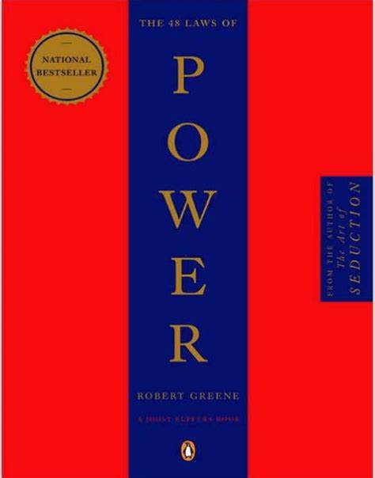

"The 48 Laws of Power" by Robert Greene is a guide on how to gain and maintain power. Here’s a brief summary of some of the key laws: 1. **Never Outshine the Master**: Always make those above you feel superior. Hide your talents to avoid making them feel insecure¹. 2. **Never Put Too Much Trust in Friends, Learn How to Use Enemies**: Friends can betray you out of envy. Former enemies, however, have more to prove and can be more loyal¹. 3. **Conceal Your Intentions**: Keep people off-balance by never revealing your true plans. This prevents them from preparing a defense¹. 4. **Always Say Less Than Necessary**: The more you say, the more likely you are to say something foolish. Silence can make you appear more powerful and mysterious². 5. **So Much Depends on Reputation – Guard It with Your Life**: Your reputation is the cornerstone of your power. Protect it fiercely and be vigilant against attacks². These are just a few of the 48 laws. Each law is illustrated with historical examples and practical advice on how to apply them in various situations¹
